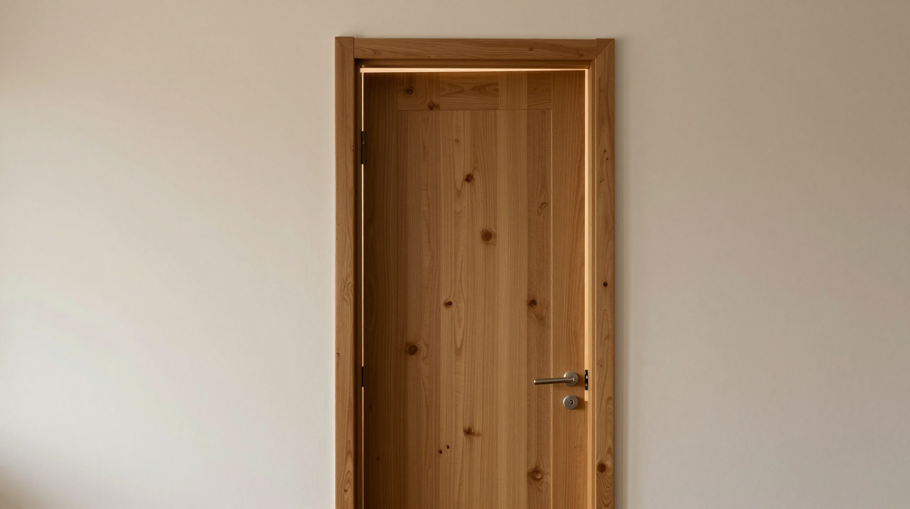

Justiça do Trabalho · o modo colaborativo da IA
Pensar com a máquina.
O juiz e a IA trabalhando juntos, cada um no que faz melhor. A máquina organiza, propõe e desafia. O juiz pondera, escolhe e decide.
→ ou espaço avança · ← volta · I abre o índice · + e − mudam o tamanho do texto · F tela cheia
Abertura
Trocar a pergunta.
A pergunta de sempre
A máquina vai substituir o juiz?
A pergunta que importa
O que o juiz, pensando junto com a máquina, faz que nenhum dos dois faria sozinho?
Do artigo O cérebro estendido: inteligência artificial e a evolução cognitiva do profissional do Direito, de Jorge Araujo, na coletânea dos 100 anos do IARGS.
Ato 1 · o centauro
Kasparov perdeu para a máquina. E não foi embora.
Clique em cada ano.
Ato 1 · o centauro
2005, torneio livre: valia qualquer combinação. Quem venceu?
Kasparov chamou a dupla de centauro: metade humano, metade máquina, mais forte que qualquer um dos dois sozinho. O que decidiu não foi a força de cada um, mas o modo de trabalhar juntos.
Ato 1 · o centauro
A máquina vê o que não vemos.
Seul, 2016. No segundo jogo contra Lee Sedol, o AlphaGo pôs uma pedra onde nenhum jogador humano poria. Os comentaristas acharam que era erro. Lee Sedol saiu da sala, voltou e perdeu. Depois disse que aquele lance mudou sua compreensão do jogo.
Um ano depois, o AlphaGo Zero aprendeu só com as regras, jogando contra si mesmo. Em três dias chegou ao que a humanidade levou três mil anos para descobrir, e foi além.
A máquina não precisa pensar como nós para chegar a bons resultados.Richard Susskind chama de AI fallacy confundir o processo (como a máquina faz) com o resultado (o que ela entrega).
Por isso a colaboração vale: a máquina explora caminhos que o juiz não percorreria, e o juiz sabe quais deles servem ao caso.
Ato 2 · o vínculo
Tsaheylu: o cavaleiro não comanda. Pensa junto.
No filme Avatar (2009), os Na'vi têm, nas tranças, terminações nervosas que se ligam às de outros seres: o animal de montaria, as árvores antigas, a memória do planeta. Chamam essa ligação de tsaheylu, o vínculo.
Ligado, o cavaleiro pensa com o animal. As duas mentes não se fundem: trabalham em sincronia. Quando o vínculo se desfaz, cada um volta a ser o que era.
Ato 2 · o vínculo
Quatro jeitos de se relacionar com a máquina. Só um é colaboração.
Ato 2 · o vínculo
O centauro mostra que a dupla vence. O tsaheylu mostra como.
O centauro
A dupla bem organizada vence o mais forte de cada lado. O que pesa é o processo.
O tsaheylu
Cada um conserva o que é. A responsabilidade segue inteira com quem assina.
O Cortex é a tentativa de dar ao gabinete o processo melhor do torneio de 2005: o que é da máquina vai para a máquina, o que é do juiz fica com o juiz, e a passagem de um para o outro tem regra.
Ato 3 · a colaboração no gabinete
A mesma IA, doze modos de usar. O colaborativo é o centro.
O risco não está na IA, mas no modo de usar. Clique num modo para ver onde ele aparece no Cortex.
Do artigo Doze modos de usar IA no Direito (07/03/2026), no Substack de Jorge Araujo.
Ato 3 · a colaboração no gabinete
Quem faz o quê.
Clique em cada tarefa para ver a quem ela cabe.
Ato 3 · a colaboração no gabinete
A máquina traz os caminhos. O juiz escolhe depois de ouvir a prova.
No processo-modelo, fictício, a atendente de nutrição diz que sofreu assédio no hospital. O que depende da prova oral fica em aberto, com um caminho para cada resultado. Clique.
Ato 3 · a colaboração no gabinete
Depois da audiência, o juiz conduz.
A pré-sentença é uma proposta, não uma decisão. O juiz pode acolher os fundamentos, acrescentar outros ou mudar o resultado. Clique.
É o centauro na prática: a máquina fez a parte longa e repetitiva antes da audiência; o juiz chega à sala sabendo o que precisa ouvir.
Ato 3 · demonstração
O painel em que o juiz trabalha com a máquina.
O mesmo processo-modelo. Cada afirmação da máquina aponta a folha dos autos, para o juiz conferir na fonte.
No painel: aba Pré-sentença (os ramos A, C e B), aba Roteiro (as perguntas por depoente, com campo para as anotações do juiz), aba Autos (cada peça abre na folha).
Ato 3 · a colaboração no gabinete
A máquina leva o repetitivo. O juiz fica com o litígio.
"Não paguei porque não tinha dinheiro" não é matéria de defesa: quem não pagou continua devedor. O Cortex monta esses tópicos no padrão do juízo, e o juiz se concentra no que é controvertido de verdade.
Ato 3 · experimente
O juiz pondera critério a critério. A máquina organiza e calcula.
Teto da faixa:
Escala de 0 a 4 por inciso. Nos quatro critérios de lógica inversa (em vinho), o controle mede o que atenua o dano. Os valores iniciais são os do Ramo A do processo-modelo (27,5 pontos, R$ 12.500,00). Quem move os controles é o juiz.
Ato 3 · a colaboração no gabinete
O juiz conversa com a minuta, e a conversa fica registrada.
Em amarelo, o que o juiz preenche. A minuta anterior nunca se perde: cada mudança registra o motivo e o trecho substituído, com data.
Ato 3 · a colaboração no gabinete
A máquina serve para desafiar a tese, não para confirmá-la.
Clique em cada etapa.
E, quando o juiz quer, a segunda opinião: uma decisão nova, feita do zero, de preferência por outro modelo, ao lado da primeira.
Ato 4 · os cuidados
Três riscos que precisam ser ditos com clareza.
A bajulação
Os modelos tendem a concordar com quem pergunta e a confirmar a hipótese preferida. No Direito, isso é o oposto do que se quer.
No Cortex: a verificação jurídica é feita por um modelo de outra empresa, que procura erro de direito, de conta e de pedido, e a segunda opinião é redigida sem ler a primeira.
A alucinação
A invenção plausível de precedentes e dispositivos que não existem. Toda referência sugerida pela máquina precisa ser conferida na fonte.
No Cortex: lei e jurisprudência vêm de uma base já conferida, com fonte e data; a citação que não passou pela base sai marcada como não confirmada; cada fato aponta a folha dos autos.
A desresponsabilização
A tentação de deixar o juízo com a máquina, a pretexto de eficiência. A máquina redige e sugere; a decisão e a assinatura são do juiz.
No Cortex: nada vai ao PJe assinado; o juiz escolhe o caminho, aprova a versão e assina lá. Toda decisão feita com apoio de IA leva a nota de transparência da Resolução CNJ 615/2025.
Ato 4 · os cuidados
O vínculo tem regras escritas.
Uma sessão por processo. Nenhum caso contamina o outro.
Sem dados pessoais. Nomes, CPF e endereços são trocados por marcadores antes de qualquer envio.
As regras moram nas skills. O modo de decidir do juízo está escrito uma vez só, igual para todos os modelos.
Nada é apagado. Toda versão fica, com o motivo de cada mudança.
Qualquer modelo. O juiz escolhe a IA e pode trocá-la; o vínculo é com o método, não com o fornecedor.
O juiz decide. Escolhe o caminho, aprova a versão e assina.
Encerramento

A IA já mudou o trabalho do juiz. A pergunta é que juiz cada um de nós quer ser do outro lado dessa mudança.
Nem o reflexo defensivo, que recusa a ferramenta, nem o entusiasmo ingênuo, que entrega o juízo à máquina. O juiz que conhece os limites da ferramenta, a configura ao seu modo de decidir e a desafia em vez de obedecer a ela.
Encerramento